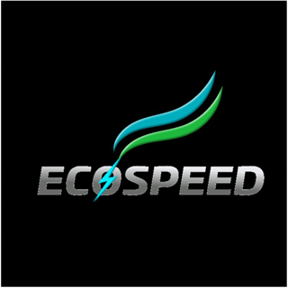
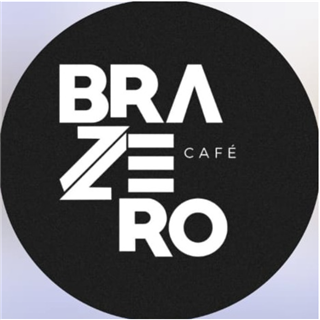
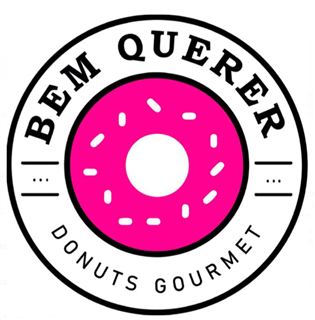
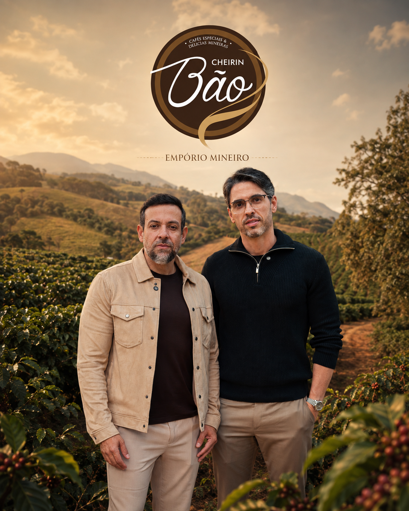

Mais faturamento para o negócio que você construiu
Você já ganha com as vendas da sua empresa. Ao transformar sua marca em franquia, pode abrir novas fontes de faturamento: a venda de franquias, os royalties e, dependendo do modelo do seu negócio, ganhar com o fornecimento de produtos para a rede.
Empresários vão começar a te pagam para abrir unidades da sua marca. Seu negócio chega a novos lugares, e sua receita pode crescer junto com essa expansão.
Na formação com a X Franchise, você aprende a organizar esse modelo e desenvolver a venda de franquias com a experiência de quem já construiu.
Sem estrutura, a expansão vira improviso
A maioria das marcas que tenta crescer por franquias esbarra nos mesmos problemas:
Não sabe por onde começar
Franquear parece complexo: contrato, circular de oferta, operação e jurídico, cada fonte diz uma coisa.
Faturamento travado
A receita depende só da sua operação. Sem novos canais, o negócio não escala.
Medo de perder o controle
Sua marca nas mãos de terceiros, sem padrão e sem garantia de qualidade em outras unidades.
Crescer sem plano
Expandir sem método vira risco: cada novo passo pode custar caro em vez de gerar retorno.
A formação da X Franchise nasceu para resolver isso: criada por empreendedores que construíram uma rede real, não por quem apenas estudou o assunto.
A formação que transforma sua marca em uma rede
Você aprende a organizar o modelo de franquia, montar a venda de unidades e preparar a operação para receber novos franqueados.
Tudo com método testado por quem já construiu uma das maiores redes do país, e acompanhado em cada etapa: da estrutura da franqueadora à abertura das unidades.
Não é teoria. É a experiência de quem vendeu franquias, abriu unidades e conduziu o dia a dia de uma rede real.
Um currículo construído por quem fez, não por quem estudou
Na formação, você aprende a: 👇
Franqueadoras que subiram de nível aplicando o método
O método já gerou centenas de vendas de franquias, novas receitas recorrentes e crescimento previsível para redes em todo o Brasil.
Lançamentos de alto impacto

EcoSpeedLançamento estruturado resultou na venda de 86 unidades já na entrada da marca no mercado.
Após a formatação, iniciou a expansão e vendeu 16 unidades em poucos meses.

Brazzero CaféConcluiu a formação, vendeu a primeira unidade e iniciou a construção da franqueadora.
Vendas com previsibilidade
Implementou a estratégia de fechamento e passou a vender com previsibilidade.
Saiu de 6 para 12 franquias vendidas por mês com estrutura comercial organizada.

Bem-Querer DonutsAjustes estratégicos geraram nova fonte de receita recorrente.

Criada pelos fundadores da maior rede de cafeterias do Brasil, a Cheirin Bão.
Empreendedores que já venderam mais de 1.200 franquias. Hoje ensinam franqueadores a estruturar crescimento com método, não com improviso.
Isso não é opinião. É validação de mercado.
A formação é para quem quer construir de verdade
É para você se:
- Você tem um negócio que funciona e quer chegar a novos mercados
- Você quer descobrir se sua marca está pronta para virar franquia
- Você quer construir uma rede com estrutura, não no improviso
- Você quer aprender com quem já vendeu mais de 1.000 franquias
Não é para quem:
- Busca dinheiro rápido sem construir estrutura
- Só quer vender franquias sem construir uma rede forte
- Não quer preparar os futuros franqueados para o mercado
Dúvidas antes de preencher?
Sim. Você pode conhecer a proposta e esclarecer como a X Franchise atua antes de decidir sobre sua participação.
Não precisa. A formação é para quem tem um negócio e quer aprender a transformar sua marca em uma rede de franquias.
Nossa equipe entrará em contato para conhecer o momento da sua empresa, apresentar a proposta e esclarecer suas dúvidas.